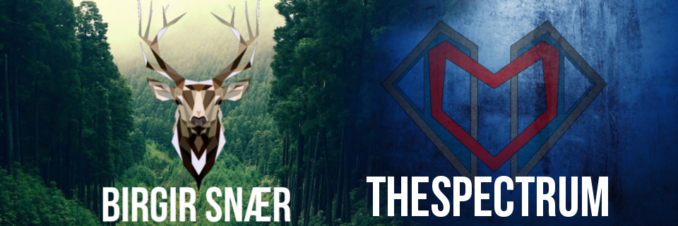

Youtube

Whole Youtube thing started when i came to Iceland ,It was summer 2006.
After living here for that long i noticed that my naive language (Polish) is getting worse,
So i started to record and upload videos of games on youtube to maintain what i have left from my polish.
Now i am putting a bit more effort in it even though i am not famous, i bought expesive microphone and computer,
to provide best possible quality.
My Logo
It all started at 7th grade when we had some kind of even in school...
For all 5 days evey day had diffrent topic and we just had fun in school
Waiting on break i drew on table two wired shapes near each orhter,
than i added some straight lines to it, and made it more crispy,
In half year and tons and tons of editing you can enjoy the very best logo of mine